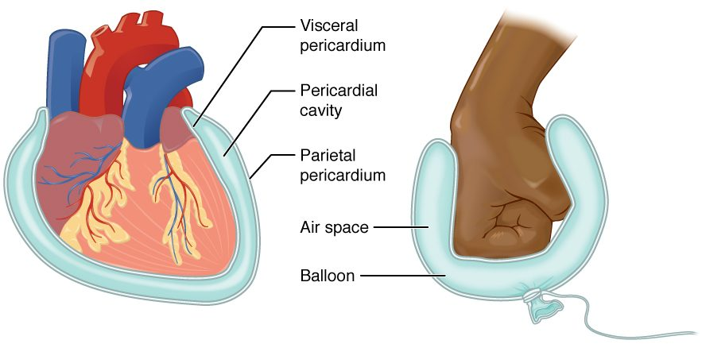

Spaces that hold your organs
Press on your belly and it gives. Press on your skull and it does not. Under the belly wall lies a large space packed with soft organs that shift as you move. Under the skull lies a smaller space with a single organ, the brain, locked in bone. Your body has several of these internal spaces, called body cavities, and most of the organs in your trunk slide against smooth, wet linings called serous membranes. This page maps the body cavities and explains how serous membranes work.
A body cavity (Latin cavus = hollow) is an enclosed space inside the body that holds and protects organs. The cavities are defined in the anatomical position, and there are two main ones: the dorsal body cavity at the back and the ventral body cavity at the front. Figure 1 shows both.
![Side and front views of the body with the cavities shaded. The cranial cavity inside the skull holds the brain, and a narrow canal runs down from it through the backbone; together they form the dorsal body cavity. In the chest, the two lung spaces sit on either side of a central space whose lower part surrounds the heart. A dome-shaped diaphragm lies below the chest. Below it, the large abdominal cavity continues into the funnel-shaped pelvic cavity; chest, abdominal and pelvic spaces together form the ventral body cavity.](../figures/os-1-15.jpg)
The dorsal body cavity
The dorsal body cavity (dorsum = back) is the posterior of the two main cavities. It has two parts that run into each other:
- The cranial cavity (crani/o = skull) is the space inside the skull. It holds the brain.
- The vertebral canal, also called the spinal cavity, is the narrow channel that runs down through the stacked bones of the backbone. It holds the spinal cord, the thick cord of tissue that carries signals between the brain and the body. This course uses the name vertebral canal.
The brain and spinal cord form one continuous structure, so the two spaces are one continuous cavity. Both are walled in by bone. That bony wall is what protects the brain and spinal cord from a blow. It is also why swelling inside the skull is dangerous: bone cannot stretch, so any extra volume raises the pressure on the brain.
The brain and spinal cord are wrapped in their own protective layers, not in the serous membranes described below. The nervous system chapter covers those layers.
The ventral body cavity and the diaphragm
The ventral body cavity (venter = belly) is the large anterior cavity of the trunk. It holds the heart, lungs, stomach, liver, intestines, bladder and most of the other organs of the trunk. It is far bigger than the dorsal cavity, and its walls are mostly muscle, not bone, so it can change size and shape.
A dome-shaped sheet of muscle called the diaphragm (Greek diaphragma = partition, a wall across) divides the ventral cavity in two. The dome bulges up into the chest, and its edges attach all the way around the inside of the lower chest wall, the lower end of the breastbone and the backbone. Above it is the thoracic cavity; below it is the abdominopelvic cavity.
The diaphragm is also the main muscle of breathing. When it contracts, its dome flattens and moves down. That enlarges the thoracic cavity from below, and air flows into the lungs. The respiratory chapter covers that mechanism in full.
The thoracic cavity
The thoracic cavity (Greek thorax = chest) is the part of the ventral cavity above the diaphragm, enclosed by the bony cage of the chest. It has three compartments side by side, which you can see in a transverse section through the chest:
- two pleural cavities, one around each lung, on the right and left;
- the mediastinum (Latin mediastinus = standing in the middle), the central compartment between the two lungs.
The mediastinum runs from the breastbone in front to the backbone behind, and from the base of the neck down to the diaphragm. It is a region, not a sealed cavity. It holds the heart, the large blood vessels entering and leaving it, the trachea (windpipe), the esophagus and the thymus. In the lower part of the mediastinum, the heart is wrapped in its own serous membrane, with the thin pericardial cavity around it.
So the lungs lie lateral to the mediastinum, and the heart lies medial to both lungs. Because the mediastinum separates the two pleural cavities, a problem in one pleural cavity, such as air leaking in around the right lung, usually leaves the left lung working.
The abdominopelvic cavity
The abdominopelvic cavity is the part of the ventral cavity below the diaphragm. It has two parts, named for the region they sit in:
- The abdominal cavity is the upper, larger part. It holds the stomach, liver, gallbladder, pancreas, spleen, most of the intestines, and the kidneys against its back wall.
- The pelvic cavity is the lower part, held in the bowl-shaped ring of bone at your hips. It holds the urinary bladder, the final part of the intestine, and the internal reproductive organs, such as the uterus and ovaries in females.
No wall separates the two. The boundary is an imaginary slanted plane across the upper rim of the bony pelvic ring. Organs can cross it: a full bladder rises up into the abdominal cavity, and a pregnant uterus grows far up into it.
The abdominal cavity is walled in front mainly by muscle, not bone, so its organs are less protected than those in the chest. A blow to the belly can injure the liver or spleen directly, with no bone in the way below the lower edge of the chest's bony cage.
A map of the cavities
Figure 2 shows how the cavities nest inside one another. Each box sits inside the larger space that contains it.
Serous membranes: two layers and a film of fluid
Push your fist into a soft, underinflated balloon. The balloon wraps around your fist in two layers: an inner layer touching your knuckles and an outer layer facing away. Between the layers is a thin space of air. Your fist is wrapped by the balloon, but it is never inside the air space. Figure 3 shows the heart wrapped in exactly this way.

A serous membrane (ser/o = watery fluid) is a thin, smooth sheet that lines the ventral body cavity and covers the organs in it. It is built of a single layer of flat cells resting on a thin layer of supporting tissue. Like the balloon, each serous membrane is one continuous sheet folded back on itself, so it has two layers:
- The parietal layer (Latin paries = wall) lines the wall of the cavity.
- The visceral layer (Latin viscera = internal organs) covers the surface of the organ. The visceral layer on the outside of an organ such as the stomach is often called its serosa.
Between the two layers is a thin space, the serous cavity. The cells of both layers release a small amount of serous fluid, a clear, watery fluid, into that space. In a healthy person there is only a thin film of it, so the two layers lie almost touching.
That film is the working part. Two smooth, wet surfaces with fluid between them slide over each other with very little friction. Your heart beats about 100,000 times a day and your lungs expand and shrink with every breath, and each movement slides the visceral layer over the parietal layer without wearing either one.
| Parietal layer | Visceral layer | |
|---|---|---|
| Word root | paries = wall | viscera = internal organs |
| Where it lies | lines the wall of the cavity | covers the surface of the organ |
| Faces the serous cavity | yes, from the outside | yes, from the inside |
| Around the heart | the outer layer of the sac | the layer on the heart's surface |
| In the balloon model | the far wall of the balloon | the balloon wall touching the fist |
The three serous cavities
There are three serous membranes in the ventral body cavity, and each encloses its own serous cavity:
- The pleural cavity (Greek pleura = side, rib) is the thin space around each lung, between the layer on the lung and the layer on the inside of the chest wall. There are two, right and left, and they do not connect.
- The pericardial cavity (peri- = around, cardi/o = heart) is the thin space around the heart, between the layer on the heart and the outer layer of the sac that encloses it.
- The peritoneal cavity is the thin space in the abdominopelvic cavity between the layer lining the abdominal wall and the layer covering the organs. The serous membrane there is the peritoneum (Greek peritonaion = stretched around). It is the largest serous membrane in the body. Some organs, such as the kidneys, lie against the back wall behind the peritoneum, covered by it on their front surface only.
| Pleural cavity | Pericardial cavity | Peritoneal cavity | |
|---|---|---|---|
| Serous membrane | pleura | the serous layers around the heart | peritoneum |
| Organ wrapped | one lung each | heart | most abdominal organs |
| How many | two, right and left | one | one |
| Lies within | thoracic cavity | mediastinum | abdominopelvic cavity |
| Movement it eases | lungs expanding and shrinking | heart beating | stomach and intestines churning and shifting |
The key idea: the organ is never inside its serous cavity. A serous cavity is only the thin, fluid-filled gap between the layers. The lung lies in the thoracic cavity, wrapped by the visceral layer of the pleura, but it is not in the pleural cavity.
When serous membranes go wrong
Because a serous cavity is a closed space with almost nothing in it, anything that collects there takes up room the organ needs.
- Rough, inflamed layers. Infection or injury makes the two layers swollen and rough. They rub instead of gliding, so each heartbeat or breath causes sharp pain and a grating sound a clinician can hear with a stethoscope. That is what Ms. Reyes had around her lung.
- Extra fluid. When more serous fluid is made than is removed, it collects between the layers. In the pleural cavity it presses on the lung, and the lung cannot fully expand. In the pericardial cavity it presses on the heart, which cannot fill fully between beats.
- Blood or air. A wound can let blood or air into a pleural cavity. Either one separates the two layers and lets the lung collapse away from the chest wall.
The rule: a serous cavity works because it is nearly empty. Anything that fills it compresses the organ beside it.